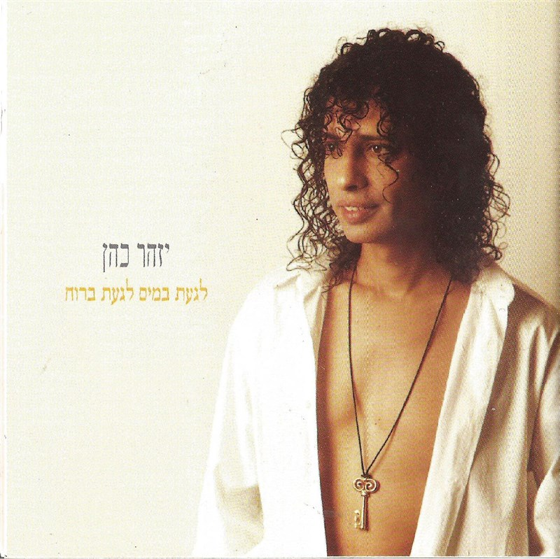
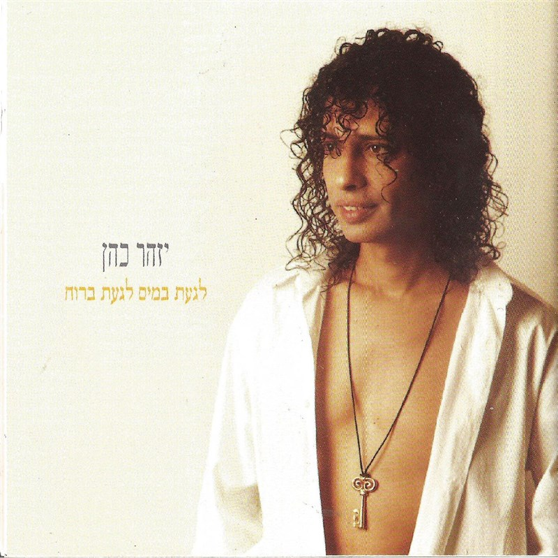
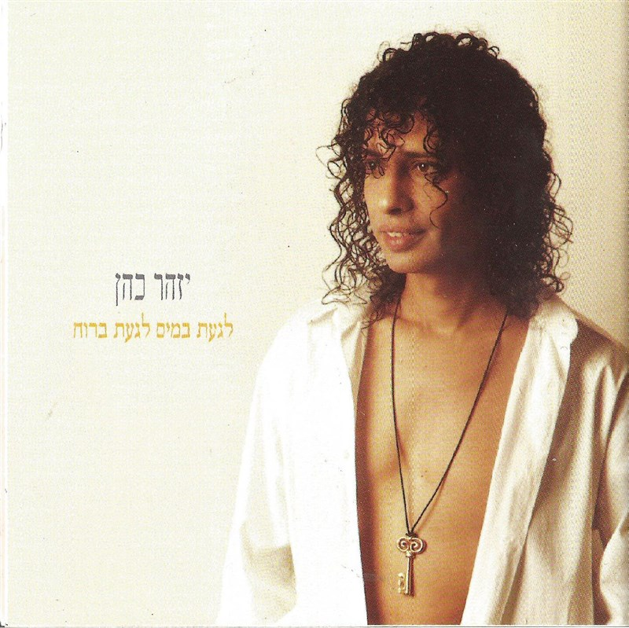

My Photos


 

יזהר כהן הוא זמר ישראלי מצליח ואהוב, שנולד בשנת 1951 למשפחה מוזיקלית ממוצא תימני. אביו, שלמה כהן, היה החזן הראשי של תל אביב, וכל אחיו עסקו במוזיקה – כך שספג את המוזיקה מבית כבר מגיל צעיר. בצעירותו שירת בצוות הווי הנח"ל, מה שהיווה עבורו קרש קפיצה לעולם הבמה.
במהלך שנות ה־70 הפך לאחת הדמויות הבולטות בזמר הישראלי עם להיטים מצליחים כמו "ניגונה של השכונה", "שיר כלולות" ו"לקראת ערב". בשנת 1978 פרץ לתודעה הבינלאומית כאשר ייצג את ישראל באירוויזיון עם השיר "אבניבי" וזכה במקום הראשון – הזכייה הראשונה של ישראל בתחרות זו. בהמשך, השתתף באירוויזיון גם ב־1985 עם השיר "עולה עולה", שהגיע למקום החמישי.
תחומי העניין של כהן כוללים מוזיקה ים־תיכונית, תרבות ישראלית ואופנה. הוא ידוע בהופעתו הססגונית, בתסרוקת האייקונית שלו ובכישרון הבימתי יוצא הדופן.
יזהר כהן הושפע ממוזיקה מזרחית מסורתית, ממוזיקת פופ עולמית ומהלהקות הצבאיות של התקופה. הוא עצמו נחשב לדמות פורצת דרך במוזיקה הישראלית וממשיך להופיע ולרגש קהלים עד היום, תוך שהוא משאיר חותם בלתי נשכח על התרבות הישראלית.

Abanibi – Eurovision 1978
אם אתם אוהבים את יזהר – תנו לייק 😊
סרקו את הקוד כדי להגיע לעמוד של יזהר כהן

| ההבדל | Web 1.0 | Web 2.0 | Web 3.0 |
|---|---|---|---|
| סוג התוכן | קריאה בלבד (Read-only) | קריאה וכתיבה , תוכן אינטראקטיבי ודינמי | תוכן מותאם אישית, סמנטי ואינטליגנטי (Semantic Web) |
| אופי האינטראקציה | אתרים סטטיים: המשתמש צורך תוכן ללא אפשרות תגובה או שיתוף | זירה חברתית: המשתמשים יוצרים, מגיבים ומשתפים (רשתות חברתיות, בלוגים) | אינטראקציה חכמה בהתאמה אישית בעזרת AI והקשר תוכן (Context aware) |
| טכנולוגיות | HTML בסיסי, דפים סטטיים | AJAX, JavaScript, APIs, שירותים חכמים | טכנולוגיות מבוזרות (Blockchain), למידת מכונה ובינה מלאכותית |
|
|